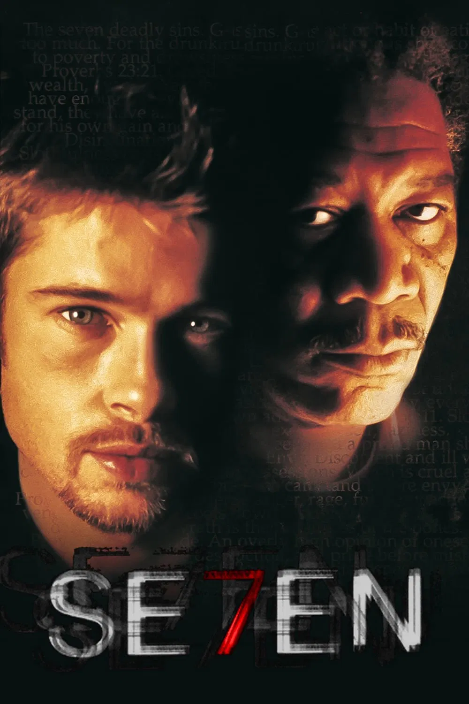

Plot & vocabulary
Follow the clues
Use the arrows to move through the questions.
Extra challenge
Find the seven deadly sins
Click any letter in a hidden word. Definitions and symbols can help you find each one.
Complete movie lesson
Investigate a chilling case while building English vocabulary for mystery, crime, and moral choices.

Work through the three sections at your own pace. Your answers are saved on this device.
Plot & vocabulary
Use the arrows to move through the questions.
Extra challenge
Click any letter in a hidden word. Definitions and symbols can help you find each one.
Guiding questions
Comprehension check
Time to write
What is the worst deadly sin, in your opinion? Why? Do you have any examples or numbers to support your answer?